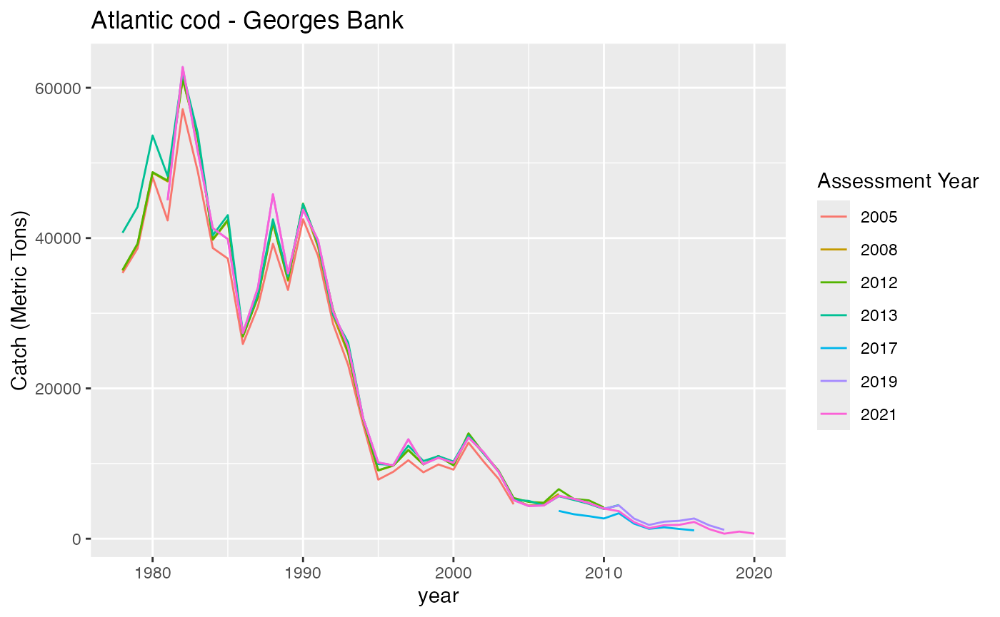
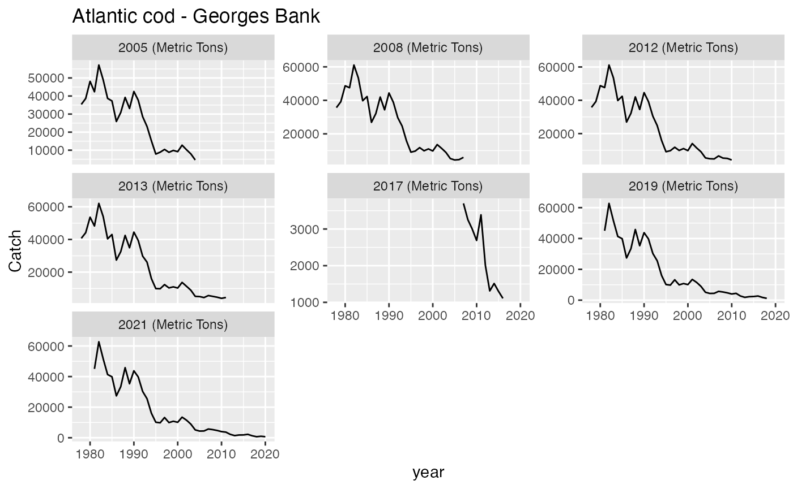
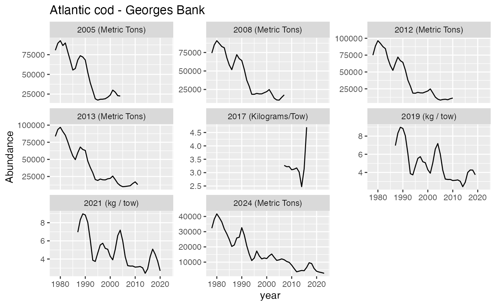

Stock assessment time series data
Time series data for all federally managed stocks are bundled with the package
The stockAssessmentData looks like this:
#> # A tibble: 261,295 × 17
#> StockName Stockid Assessmentid Year Value Metric Description Units
#> <chr> <dbl> <dbl> <dbl> <dbl> <chr> <chr> <chr>
#> 1 Acadian redfish - … 10455 10643 1913 7 Catch Reported C… Metr…
#> 2 Acadian redfish - … 10455 10643 1914 30 Catch Reported C… Metr…
#> 3 Acadian redfish - … 10455 10643 1915 40 Catch Reported C… Metr…
#> 4 Acadian redfish - … 10455 10643 1916 53 Catch Reported C… Metr…
#> 5 Acadian redfish - … 10455 10643 1917 82 Catch Reported C… Metr…
#> 6 Acadian redfish - … 10455 10643 1918 73 Catch Reported C… Metr…
#> 7 Acadian redfish - … 10455 10643 1919 25 Catch Reported C… Metr…
#> 8 Acadian redfish - … 10455 10643 1920 31 Catch Reported C… Metr…
#> 9 Acadian redfish - … 10455 10643 1921 13 Catch Reported C… Metr…
#> 10 Acadian redfish - … 10455 10643 1922 9 Catch Reported C… Metr…
#> # ℹ 261,285 more rows
#> # ℹ 9 more variables: AssessmentYear <dbl>, Jurisdiction <chr>, FMP <chr>,
#> # CommonName <chr>, ScientificName <chr>, ITIS <dbl>, AssessmentType <chr>,
#> # StockArea <chr>, RegionalEcosystem <chr>Several functions are bundled with the package to aid in filtering the data by species, region, time range, metric etc. Most functions filter using the unique species ITIS code.
Example
Problem: we want to find the latest catch data for Atlantic cod in Georges Bank from either a Benchmark assessment or a full update.
We first need to find the ITIS code for Atlantic cod. We can use the
get_species_itis function to find this
get_species_itis(stock = "Atlantic cod")
#> # A tibble: 3 × 3
#> StockName Jurisdiction ITIS
#> <chr> <chr> <dbl>
#> 1 Atlantic cod - Eastern Georges Bank NEFMC 164712
#> 2 Atlantic cod - Georges Bank NEFMC 164712
#> 3 Atlantic cod - Gulf of Maine NEFMC 164712There are three stocks under the jurisdiction of the NEFMC, a Georges Bank, an Eastern Georges Bank, and a Gulf of Maine stock.
Visualize data
Lets visualize all the Catch data for every assessment of the Georges Bank stock
p <- plot_ts(itis = 164712,stock = "Atlantic cod - Georges Bank",metric ="Catch",printfig=F)
p$plot
We can also plot each assessment year in its own facet
p <- plot_ts(itis = 164712,
stock = "Atlantic cod - Georges Bank",
metric ="Catch",
facetplot=T,
printfig=F)
p$plot
The facet plot is particularly useful when assessment methods have
changed over time and consequently the units have also. If we plot the
Abundance instead of Catch we can see how the
assessment data has changed over time from Metric tons prior to 2017 to
kg/tow from 2017 onward
p <- plot_ts(itis = 164712,stock = "Atlantic cod - Georges Bank",metric ="Abundance",facetplot=T,printfig=F)
p$plot
The plot_ts function returns a
list of two items, a ggplot object and data frame containing the data
used in the plot.
Extract latest data
Some of the assessments visualized above may not be considered
Operational (Analyses conducted to provide scientific
advice to fishery managers with particular focus on determining stock
status and recommending catch limits - from stockSMART Data
Dictionary).
We can use the ITIS code to search for the most recent Catch time
series data that comes from an Operational assessment using
the get_latest_metrics function. A list containing two data
frames are returned.
- A summary table containing relevant metadata including the number of years of data available and the date range.
cod <- get_latest_metrics(itis = 164712, metrics = "Catch")
cod$summary
#> # A tibble: 3 × 10
#> StockName CommonName StockArea ITIS AssessmentYear RegionalEcosystem Metric
#> <chr> <chr> <chr> <dbl> <dbl> <chr> <chr>
#> 1 Atlantic … Atlantic … Eastern … 164712 2023 Northeast Shelf Catch
#> 2 Atlantic … Atlantic … Georges … 164712 2021 Northeast Shelf Catch
#> 3 Atlantic … Atlantic … Gulf of … 164712 2021 Northeast Shelf Catch
#> # ℹ 3 more variables: FirstYear <dbl>, LastYear <dbl>, numYears <dbl>- A data table containing the time series data along with additional metadata
cod$data
#> # A tibble: 123 × 20
#> StockName CommonName StockArea ITIS AssessmentYear RegionalEcosystem Metric
#> <chr> <chr> <chr> <dbl> <dbl> <chr> <chr>
#> 1 Atlantic… Atlantic … Eastern … 164712 2023 Northeast Shelf Catch
#> 2 Atlantic… Atlantic … Eastern … 164712 2023 Northeast Shelf Catch
#> 3 Atlantic… Atlantic … Eastern … 164712 2023 Northeast Shelf Catch
#> 4 Atlantic… Atlantic … Eastern … 164712 2023 Northeast Shelf Catch
#> 5 Atlantic… Atlantic … Eastern … 164712 2023 Northeast Shelf Catch
#> 6 Atlantic… Atlantic … Eastern … 164712 2023 Northeast Shelf Catch
#> 7 Atlantic… Atlantic … Eastern … 164712 2023 Northeast Shelf Catch
#> 8 Atlantic… Atlantic … Eastern … 164712 2023 Northeast Shelf Catch
#> 9 Atlantic… Atlantic … Eastern … 164712 2023 Northeast Shelf Catch
#> 10 Atlantic… Atlantic … Eastern … 164712 2023 Northeast Shelf Catch
#> # ℹ 113 more rows
#> # ℹ 13 more variables: FirstYear <dbl>, LastYear <dbl>, numYears <dbl>,
#> # Stockid <dbl>, Assessmentid <dbl>, Year <dbl>, Value <dbl>,
#> # Description <chr>, Units <chr>, Jurisdiction <chr>, FMP <chr>,
#> # ScientificName <chr>, AssessmentType <chr>We can then filter the the data by the Gulf of Maine stock and plot it.
cod$data %>%
dplyr::filter(StockArea == "Georges Bank") %>%
{. ->> filteredData} %>%
ggplot2::ggplot(.) +
ggplot2::geom_line(ggplot2::aes(x=Year,y = Value)) +
ggplot2::ylab(filteredData %>% dplyr::distinct(Units)) +
ggplot2::ggtitle(paste0("Assessment Year = ",filteredData %>% dplyr::distinct(AssessmentYear)))